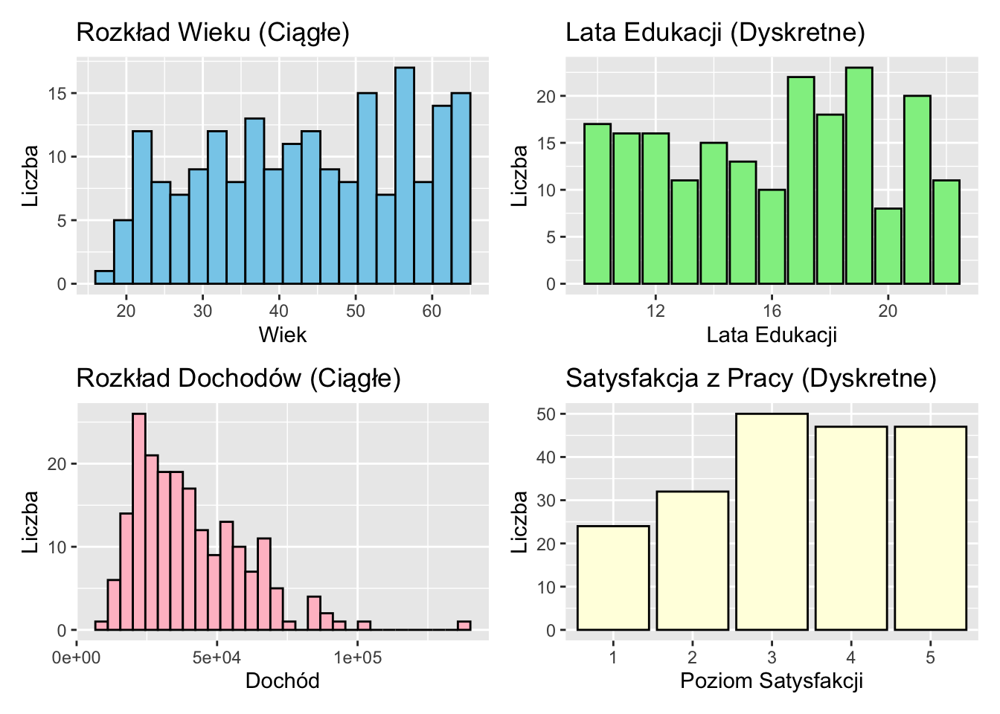

W badaniach nauk społecznych zrozumienie natury naszych danych jest kluczowe dla wyboru odpowiednich metod analizy i wyciągania prawidłowych wniosków. Ten rozdział bada fundamentalne koncepcje typów danych, zaczynając od podstawowej teorii zbiorów matematycznych i przechodząc do praktycznych zastosowań w badaniach nauk społecznych.
4.2 Podstawy Zbiorów Liczbowych
Zanim zagłębimy się w typy danych, istotne jest zrozumienie podstawowych zbiorów liczbowych, które tworzą fundament naszego rozumienia danych.
4.2.1 Podstawowe Zbiory Liczbowe
Liczby Naturalne (ℕ): Liczby do liczenia {1, 2, 3, …}
Liczby Całkowite (ℤ): Obejmują liczby naturalne, ich przeciwne i zero {…, -2, -1, 0, 1, 2, …}
Liczby Wymierne (ℚ): Liczby, które można wyrazić jako iloraz dwóch liczb całkowitych
Liczby Rzeczywiste (ℝ): Wszystkie liczby na osi liczbowej, włączając wymierne i niewymierne
4.2.2 Właściwości Zbiorów
Zbiory Przeliczalne: Zbiory, których elementy można ustawić w odpowiedniości jeden-do-jednego z liczbami naturalnymi. Na przykład, zbiór liczb całkowitych jest przeliczalny.
Zbiory Nieprzeliczalne: Zbiory, które nie są przeliczalne. Zbiór liczb rzeczywistych jest nieprzeliczalny.
Zbiory Dyskretne: Zbiory, w których każdy element jest oddzielony od innych elementów skończoną przerwą. Liczby całkowite tworzą zbiór dyskretny.
Zbiory Gęste: Zbiory, w których między dowolnymi dwoma elementami zawsze znajduje się inny element tego zbioru. Liczby wymierne i rzeczywiste są zbiorami gęstymi.
Note
Zrozumienie tych właściwości zbiorów jest kluczowe dla uchwycenia natury różnych typów danych w naukach społecznych.
4.3 Dane Dyskretne vs. Dane Ciągłe
Teraz, gdy mamy podstawy w zbiorach liczbowych, możemy lepiej zrozumieć rozróżnienie między danymi dyskretnymi a ciągłymi w badaniach nauk społecznych.
4.3.1 Dane Dyskretne
Dane dyskretne odpowiadają zbiorom dyskretnym w matematyce. Mogą przyjmować tylko określone, oddzielne wartości, często z przeliczalnego zbioru.
Właściwości danych dyskretnych:
Wartości są odrębne i oddzielne
Często (ale nie zawsze) reprezentowane przez liczby całkowite
Zazwyczaj liczone, a nie mierzone
Mogą być skończone lub nieskończone
Przykłady danych dyskretnych w naukach społecznych:
Liczba dzieci w rodzinie (ℕ)
Poziom wykształcenia (np. 1 = szkoła średnia, 2 = licencjat, 3 = magisterium)
Wybory wyborcze (np. 1 = Partia A, 2 = Partia B, 3 = Partia C)
4.3.2 Dane Ciągłe
Dane ciągłe odpowiadają zbiorom gęstym w matematyce, typowo reprezentowanym przez liczby rzeczywiste. Mogą przyjmować dowolną wartość w danym zakresie.
Właściwości danych ciągłych:
Wartości mogą być dowolną liczbą rzeczywistą w danym zakresie
Reprezentowane przez liczby rzeczywiste (ℝ)
Zazwyczaj mierzone, a nie liczone
Zawsze nieskończone (w teorii, choć ograniczone precyzją pomiaru w praktyce)
Przykłady danych ciągłych w naukach społecznych:
Wiek (może być dowolną liczbą rzeczywistą ≥ 0)
Dochód (może być dowolną nieujemną liczbą rzeczywistą)
Czas spędzony na zadaniu (może być dowolną nieujemną liczbą rzeczywistą)
4.3.3 Wizualizacja Danych Dyskretnych vs. Ciągłych
Zobrazujmy różnicę przy użyciu R:
Kliknij, aby pokazać/ukryć kod R
library(ggplot2)library(patchwork)# Generowanie przykładowych danychset.seed(123)dane_dyskretne <-sample(1:5, 1000, replace =TRUE)dane_ciągłe <-rnorm(1000, mean =3, sd =1)# Tworzenie ramek danychdf_dyskretne <-data.frame(wartość = dane_dyskretne, typ ="Dyskretne")df_ciągłe <-data.frame(wartość = dane_ciągłe, typ ="Ciągłe")# Wykres dla danych dyskretnychp1 <-ggplot(df_dyskretne, aes(x = wartość)) +geom_bar() +scale_x_continuous(breaks =1:5) +labs(title ="Dane Dyskretne", x ="Wartość", y ="Liczba") +theme_minimal()# Wykres dla danych ciągłychp2 <-ggplot(df_ciągłe, aes(x = wartość)) +geom_histogram(bins =30, fill ="skyblue", color ="black") +labs(title ="Dane Ciągłe", x ="Wartość", y ="Liczba") +theme_minimal()# Wyświetlanie wykresów obok siebiep1 + p2
4.3.4 Kontinuum Między Danymi Dyskretnymi a Ciągłymi
W praktyce rozróżnienie między danymi dyskretnymi a ciągłymi może się czasami zacierać:
Dane Ciągłe Zdyskretyzowane: Zmienne ciągłe, które są zaokrąglone lub pogrupowane w kategorie (np. grupy wiekowe, przedziały dochodów).
Dane Dyskretne o Wysokiej Liczności: Zmienne dyskretne z wieloma możliwymi wartościami mogą przybliżać dane ciągłe (np. kody pocztowe, szczegółowe kody zawodów).
Pomiary o Ograniczonej Precyzji: Zmienne ciągłe mierzone z ograniczoną precyzją wydają się dyskretne (np. temperatura mierzona do najbliższego stopnia).
Important
Wybór traktowania danych jako dyskretnych lub ciągłych często zależy od kontekstu badawczego, precyzji pomiaru i celów analitycznych.
4.4 Implikacje dla Badań w Naukach Społecznych
Zrozumienie natury danych jako dyskretnych lub ciągłych oraz ich związku ze zbiorami matematycznymi ma ważne implikacje dla badań w naukach społecznych:
Pomiar i Operacjonalizacja: Sposób, w jaki definiujemy i mierzymy zmienne, może wpływać na to, czy są one traktowane jako dyskretne czy ciągłe.
Analiza Statystyczna: Różne techniki statystyczne są odpowiednie dla danych dyskretnych vs. ciągłych. Na przykład:
id wiek dochód lata_edukacji
Min. : 1.00 Min. :18.10 Min. : 11039 Min. :10.00
1st Qu.: 50.75 1st Qu.:32.67 1st Qu.: 24964 1st Qu.:13.00
Median :100.50 Median :43.75 Median : 36294 Median :17.00
Mean :100.50 Mean :43.52 Mean : 40536 Mean :16.02
3rd Qu.:150.25 3rd Qu.:55.42 3rd Qu.: 53754 3rd Qu.:19.00
Max. :200.00 Max. :64.70 Max. :140046 Max. :22.00
satysfakcja_z_pracy
Min. :1.000
1st Qu.:2.000
Median :3.000
Mean :3.305
3rd Qu.:4.000
Max. :5.000
Kliknij, aby pokazać/ukryć kod R
# Wizualizacjep1 <-ggplot(dane, aes(x = wiek)) +geom_histogram(bins =20, fill ="skyblue", color ="black") +labs(title ="Rozkład Wieku (Ciągłe)", x ="Wiek", y ="Liczba")p2 <-ggplot(dane, aes(x = lata_edukacji)) +geom_bar(fill ="lightgreen", color ="black") +labs(title ="Lata Edukacji (Dyskretne)", x ="Lata Edukacji", y ="Liczba")p3 <-ggplot(dane, aes(x = dochód)) +geom_histogram(bins =30, fill ="pink", color ="black") +labs(title ="Rozkład Dochodów (Ciągłe)", x ="Dochód", y ="Liczba")p4 <-ggplot(dane, aes(x =factor(satysfakcja_z_pracy))) +geom_bar(fill ="lightyellow", color ="black") +labs(title ="Satysfakcja z Pracy (Dyskretne)", x ="Poziom Satysfakcji", y ="Liczba")# Układanie wykresów(p1 + p2) / (p3 + p4)

Kliknij, aby pokazać/ukryć kod R
# Analiza korelacji (odpowiednia dla zmiennych ciągłych)cor(dane$wiek, dane$dochód)
[1] 0.03168301
Kliknij, aby pokazać/ukryć kod R
# Test chi-kwadrat (odpowiedni dla zmiennych dyskretnych)chisq.test(table(dane$lata_edukacji, dane$satysfakcja_z_pracy))
Warning in chisq.test(table(dane$lata_edukacji, dane$satysfakcja_z_pracy)):
Chi-squared approximation may be incorrect
Zrozumienie fundamentalnych właściwości zbiorów liczbowych i ich związku z danymi dyskretnymi i ciągłymi jest kluczowe w badaniach nauk społecznych. Ta wiedza wpływa na nasze wybory w zakresie pomiaru, analizy i interpretacji danych. Jak widzieliśmy, podczas gdy matematyczne rozróżnienie między dyskretnym a ciągłym jest jasne, dane ze świata rzeczywistego często istnieją na kontinuum między tymi dwoma typami. Badacze muszą starannie rozważyć naturę swoich danych podczas projektowania badań, wyboru metod analitycznych i wyciągania wniosków.
4.7 Bibliografia
Gentle, J. E. (2009). Computational statistics (Vol. 308). New York: Springer.
Stevens, S. S. (1946). On the theory of scales of measurement. Science, 103(2684), 677-680.
Agresti, A. (2018). Statistical methods for the social sciences. Pearson.